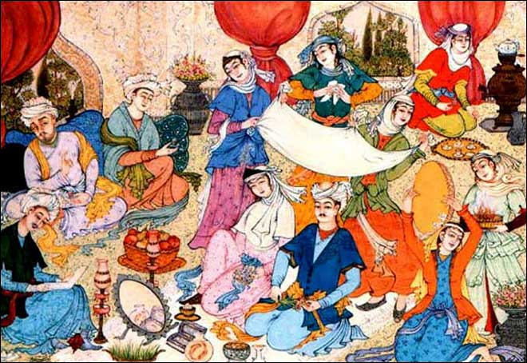
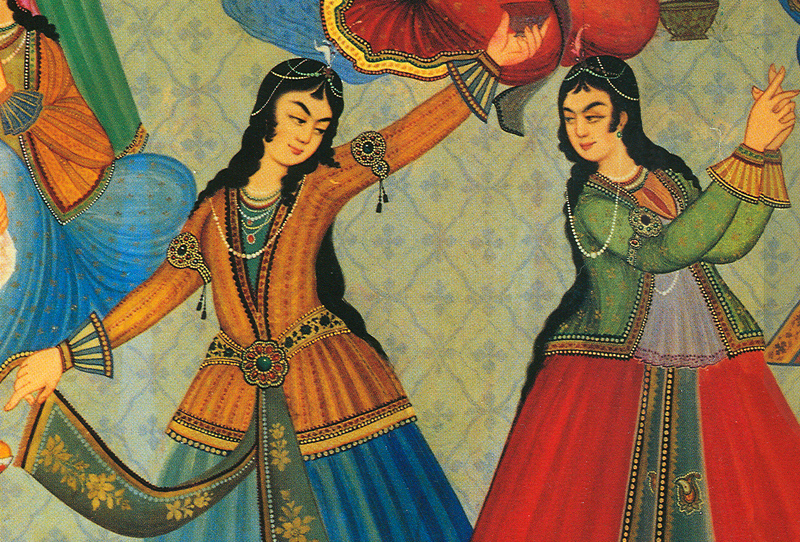
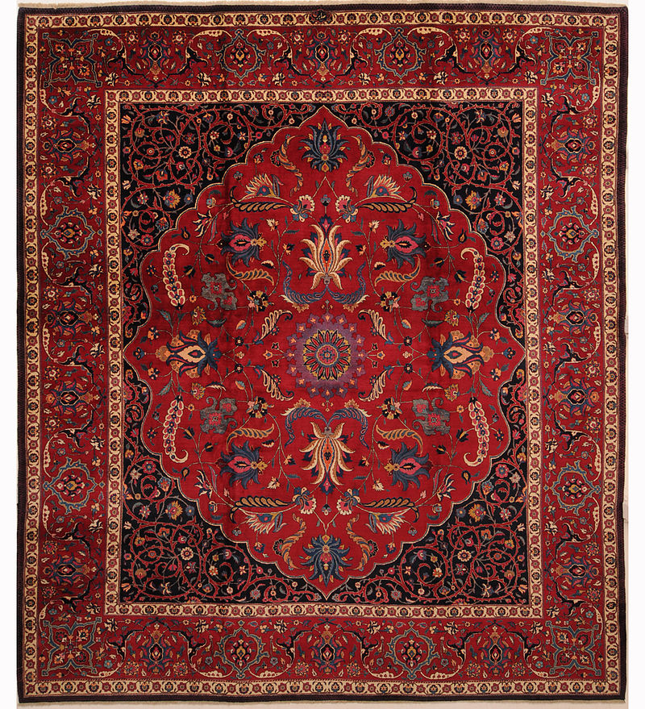
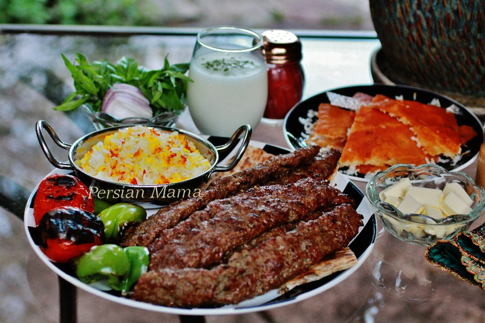

Iranian Wedding Ceremony
There are two stages in a typical wedding ritual in Iran.
Usually both phases take place in one day. The first stage is known as "Aghd",
which is basically the legal component of marriage in Iran. In this process,
the Bride and Groom as well as their respective guardians sign a marriage contract.
This phase usually takes place in the bride's home. After this legal process is over,
the second phase, "Jashn-e Aroosi" takes place. In this step, which is basically the
wedding reception, where actual feasts and celebrations are held, typically lasts from about 3–7 days.
The ceremony takes place in a decorated room with flowers and a beautifully decorated spread on the floor.
read more

Persian dance
Persian dance or Iranian dance refers to the dance styles indigenous to Iran.
Genres of dance in Iran vary depending on the area, culture, and language of the local people,
and can range from sophisticated reconstructions of refined court dances to energetic folk dances.
The population of Iran includes many ethnicities, such as Kurds, Azerbaijanis, Turkmen, Jews,
Armenian, Georgian peoples, in addition to numerous Iranian tribal groups which can be found
within the borders of modern-day Iran.Each group, region, and historical epoch has
specific dance styles associated with it.Raghs (also spelled as Raqs) is the Arabic
word for dance, and is almost exclusively the word used for dance in Persian,
as the Persian word for dance, paykubi, is no longer in common usage.
It's also the word in Azerbaijani for dance (Reqs). The Kurdish word for dance is Halperke,
and the Lurs from Lorestan use the word Bākhten (or Bāzee) for dance.The earliest
researched Persian dance is a dance worshiping Mithra (as in the Cult of Mithras)
in which a bull was sacrificed. This cult later became highly adhered in the Roman Empire.
This dance was to promote vigor in life
read more

Persian Carpet
Iranians were some of the first people in history to weave carpets.
As time progressed, the complexity and beauty of rugs
increased to a point where rugs are now bought as decorative pieces.Because of the long history of fine
silk and wool rug weaving in Iran, Persian rugs are world-renowned as some of the most
beautiful, intricately designed rugs available.
read more

National cuisine
Iranian cuisine includes a wide variety of foods ranging from Chelow kabab
(white rice served with roasted meat: barg, koobideh, joojeh, shishleek,
soltani, chenjeh), khoresh (stew that is served with white Iranian rice:
ghormeh sabzi, gheimeh, fesenjān, and others), āsh [9](a thick soup: for example
āsh-e anār), kuku (vegetable soufflé), polo (rice mixed meat, vegetables and herbs,
including loobia polo, albaloo polo, sabzi polo, zereshk polo, baghali polo, and others),
and a diverse variety of salads, such as Shirazi salad, pastries, and drinks specific
to different parts of Iran. The list of Iranian recipes, appetizers and desserts is extensive.
A famous Iranian dish with sheep brain and hooves is called kaleh pacheh.
read more
